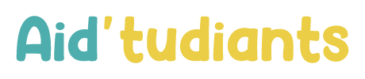

Role
Stratégie, conception visuelle, co-developpement WordPress
Projet de refonte globale de la strategie de communication d'une association existante. Travail en groupe de 5, avec une nouvelle direction artistique, une charte graphique complete et la creation d'un site WordPress.

Avec mon groupe de 5 camarades, nous avions pour objectif de choisir une association existante et d'identifier ses points faibles en strategie de communication. L'association selectionnee etait Aid'tudiants.
Notre mission etait de proposer une refonte complete : nouvelle direction artistique, charte graphique et creation d'un site WordPress. J'ai realise le site avec ma camarade Aurélie Sirot.
Analyse de la communication existante, identification des problemes d'image et de coherence, et definition des axes d'amelioration prioritaires.
Création d'une identite visuelle coherente : palette, typographies, gabarits et regles d'utilisation pour un rendu harmonise sur tous les supports.
Conception et intégration du site WordPress avec Aurélie Sirot, en mettant l'accent sur la lisibilité, la navigation et la mise en valeur des actions de l'association.
C'est le plus gros projet de notre première année en MMI, et l'un des plus plaisants a realiser. Il m'a permis de travailler en equipe sur une problematique réelle et de relier stratégie, design et production web.